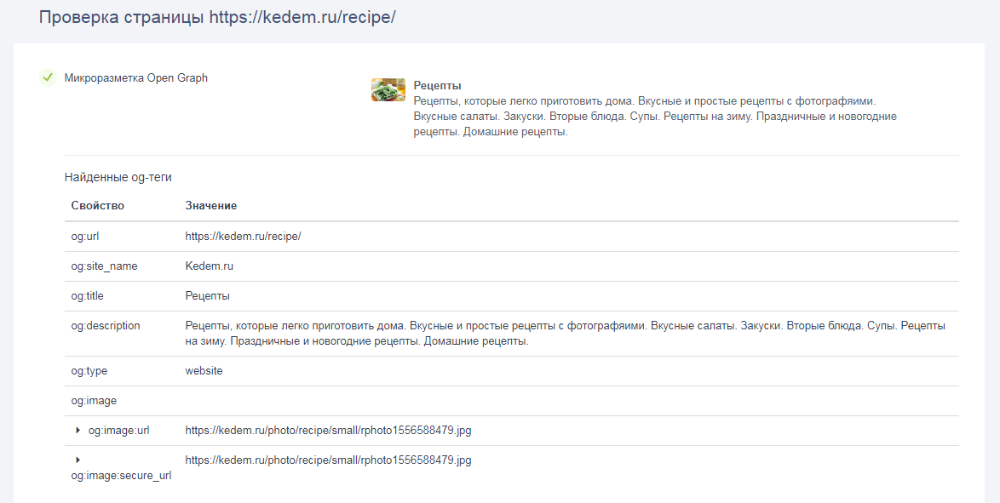

Протокол Open Graph от Facebook*
Open Graph — это стандарт микроразметки для формирования текстово-графического анонса, который отображается при добавлении ссылки на сайт в социальную сеть. С его помощью можно настроить изображение, которое должно появляться в превью, заголовок, описание и ссылку. Open Graph разработала компания Facebook*, но теперь он работает во многих популярных соцсетях и мессенджерах: ВКонтакте, Twitter, Pinterest, Одноклассниках, Telegram, Viber и других.
Зачем нужен Open Graph
Если микроразметка не настроена, в превью может попасть что-то, чего там быть не должно — рекламный баннер, который был на странице, или какой-то фрагмент текста, не описывающий основной контент.
Можно отредактировать превью вручную, но это будет делать разве что администратор корпоративного аккаунта. Пользователи, которые делятся ссылками в личных целях, привыкли к тому, что по умолчанию их ссылки выглядят хорошо — за это и отвечает Open Graph.
Что еще дает микроразметка:
- В сообщении или посте будут отображаться заголовок и изображение, релевантные содержанию страницы, а не какой-то случайных кусок информации с нее.
- Заголовок виден полностью, а размер изображения соответствует стандарту соцсети и не выглядит чужеродно.
- Сниппет будет выглядеть как самостоятельный пост, а не как ссылка, к которой нужны дополнительное описание и картинка.
- Оформленное превью улучшает поведенческие факторы и приносит больше кликов.
В дополнение к микроразметке для соцсетей есть смысл добавить так называемые социальные кнопки — «Поделиться», «Like» и другие. Обычно их делают в блогах, чтобы пользователям было удобно делиться статьями. Это избавляет от необходимости копировать и вставлять ссылки и ускоряет распространение контента.
Ключевые Мета-Теги Open Graph
Протокол Open Graph состоит из og: мета-тегов, их интегрируют в html-код страницы в <head>.
Разберем основные теги:
- og:title — название материала;
- og:description — описание материала, заполнять не обязательно;
- og:image — ссылка на картинку, которая должна сопровождать материал;
- og:type — тип добавляемого материала, например, «article» – статья, «movie» — кино и так далее;
- og:url — ссылка на саму веб-страницу, которая добавляется в социальную сеть.
Вот пример кода:
<html>
<head>
<title>Заголовок страницы</title>
<meta property="og:type" content="website">
<meta property="og:url" content="https://mysite.com/page123">
<meta property="og:title" content="Заголовок">
<meta property="og:description" content="Описание">
<meta property="og:image" content="https://mysite.com/image.jpg">
</head>
<body>
</body>
</html>
Есть и дополнительные теги для разметки музыки и видео, они перечислены на странице ogp.me. Но такого разнообразия, как в Schema.org, которую используют для формирования сниппетов в выдаче, нет. Если нужно передать информацию, например, о человеке, придется использовать те же теги: og:title, og:description и og:image. Пример:
<meta property="og:type" content="profile">
<meta property="og:title" content="Имя">
<meta property="og:description" content="Короткое описание или биография">
<meta property="og:image" content="URL профильного изображения">
<meta property="og:url" content="URL страницы профиля">`
Open Graph в Twitter
Страница, размеченная тегами Open Graph, будет корректно отображаться в Twitter, но там есть собственный набор мета-тегов — Twitter Cards. Они очень похожи на теги Open Graph, но начинаются с twitter: вместо og:. Их можно использовать вместе с тегами Open Graph или отдельно. Если на странице есть оба типа тегов, Twitter отдаст предпочтение «своим». Если нет, прочитает Open Graph.
В обратную сторону это не работает — другие социальные сети Twitter Cards читать не умеют.
Пример микроразметки для Twitter:
<html>
<head>
<title>Заголовок страницы</title>
<meta property="twitter:card" content="summary_large_image">
<meta property="twitter:url" content="https://mysite.com/page123">
<meta property="twitter:title" content="Заголовок">
<meta property="twitter:description" content="Описание">
<meta property="twitter:image" content="https://mysite.com/image.jpg">
</head>
<body>
</body>
</html>
Пример микроразметки страницы с помощью Open Graph
Пример практического использования протокола Open Graph — фрагмент html-кода, в котором использованы необходимые теги данной разметки. Подопытная страница — статья про расширенный сниппет в блоге PR-CY. Вот часть кода с разметкой:
<link rel="canonical" href="https://pr-cy.ru/news/p/10116-rasshirennyy-snippet-v-google--chto-eto-i-kak-sdelat" />
<meta property="og:title" content="Расширенный сниппет в Google — что это и как сделать">
<meta property="og:image" content="https://cover.pr-cy.io/api/og?title=Расширенный сниппет в Google — что это и как сделать&bgImage=https://s3-eu-central-1.amazonaws.com/news.pr-cy.ru/284604/10116.png&category=Знания">
<meta property="og:type" content="article">
<meta property="og:url" content="https://pr-cy.ru/news/p/10116-rasshirennyy-snippet-v-google--chto-eto-i-kak-sdelat">
<meta property="og:description" content="Все самое важное о расширенных сниппетах. Исследования и советы, которые помогут привлечь больше пользователей из выдачи Google. " />
<meta name="description" content="Все самое важное о расширенных сниппетах. Исследования и советы, которые помогут привлечь больше пользователей из выдачи Google. " />
Разберем подробнее:
- <meta property="og:title" content="Расширенный сниппет в Google — что это и как сделать" /> — название страницы, которое будет отображаться в превью при публикации в соцсетях;
- <meta property="og:image" content=... > — ссылка на изображение;
- <meta property="og:type" content="article" > — тип контента. В этом примере — статья;
- <meta property="og:url" content="https:="" pr-cy.ru="" news="" p="" 10116-rasshirennyy-snippet-v-google--chto-eto-i-kak-sdelat<="" a>"=""> — URL страницы;
- описание контента страницы.
Отдельно можно настроить отображение для Twitter. Тогда в код нужно добавить теги:
- <meta property="twitter:card" content="summary_large_image" / > — тип Тwitter Card, в этом случае — 'summary_large_image'. Это значит, что в превью ссылки будет большая картинка, а под ней — заголовок и описание.
- <meta property="twitter:url" content="..." > — URL страницы.
- <meta property="twitter:title" content="..." > -— заголовок.
- <meta property="twitter:description" content="..." > — описание контента.
- <meta property="twitter:image" content="..." > — ссылка на изображение.
- <meta property="twitter:image:width" content="800" / > и — размер изображения. Эти теги опициональные, но позволяют Twitter быстро определить размеры изображения.
- <meta property="twitter:site" content="prcyru" / > — учетная запись владельца сайта в Twitter.
Сервисы для работы и плагины Open Graph
Для работы с Open Graph есть много сервисов — для автоматического создания кода для конкретной страницы, плагины в CMS и сервисы для проверки правильности заполнения.
1. Составить код разметки Open Graph автоматически
Автоматически сделать код можно через Генератор мета-тегов Open Graph. Заполните поля ссылками и нужным текстом и скопируйте готовый код для вставки на сайт.
Можно добавить дополнительную информацию — название сайта, язык страницы, видео с YouTube, Facebook* ID. И добавить метаданные статьи — автора, время публикации, категорию, теги.
Если нужна микроразметка для Твиттера, можно добавить теги и для него.
В результате вы получите код, который нужно добавить на страницу.
2. Генератор изображений Open Graph
Это еще один бесплатный инструмент PR-CY, который позволяет генерировать изображения с заголовком, описанием и лого прямо на них.
Чтобы сгенерировать картинку, нужно добавить ссылки на фоновое изображение и лого, написать заголовок и описание.
Инструмент сразу покажет, что получилось, и сформирует код для добавления на страницу.
Можно автоматизировать процесс. Инструмент работает через API pr-cy.io. То есть каждая сгенерированная ссылка на изображение — это запрос к API.
Чтобы сделать новое изображение, нужно добавить к базовому URL параметры, которые определяют, как оно будет выглядеть. Каждый параметр нужно записать в URL после знака вопроса и разделить амперсандом (&).
Так будет выглядеть URL с заголовком (title), категорией (category) и цветом текста (color):
https://cover.pr-cy.io/api/og?title=Заголовок&category=Категория&color=000000
Этот URL можно добавить на страницу с помощью любого плагина, который позволяет вставлять произвольные мета-теги.
3. Сервис проверки Open Graph
Контролировать разметку страницы Open Graph можно через специальный сервис, разработанный Facebook*. С его помощью веб-мастер узнает, как социальная сеть будет отображать анонс внешней страницы, и сможет отредактировать мета-тег для лучшего отображения превью в социальных медиа.
Наличие разметки определяет инструмент для автоматического аудита конкретной страницы «Анализ контента». Если нужно быстро проверить, работает ли разметка, а также оценить контент, юзабилити, технические характеристики и мобильность страницы по многим параметрам, попробуйте сервис.
4. Парсер для поиска микроразметки
Посмотреть, как конкуренты составили микроразметку, можно с помощью парсера мета-тегов Open Graph. Он проанализирует страницу на наличие Open Graph тегов:
Для популярных CMS есть плагины — это сильно упрощает работу, потому что владельцу сайта нужно только добавить нужную информацию о страницах:
- «Open Graph» или «Yoast SEO» для Wordpress;
- «Phoca Open Graph» для Joomla;
- «Open Graph Meta» для Opencart.
*Компания Meta, которой принадлежит Instagram и Facebook, признана в России экстремистской организацией.